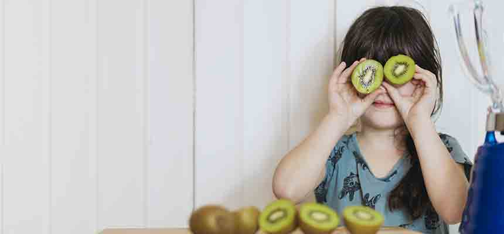

HABILITATION
Housing and Support for People with Intellectual Disabilities

Group homes – homes which are staffed to provide personal care, supervision and support to usually three to six adults with intellectual disabilities. They are located in residential neighbourhoods throughout Saskatchewan.
Group living homes – individuals who share a group living home are responsible for paying their basic shelter costs. The Ministry of Social Services provides funds for the support staff that may be required.
Supportive living programs – provide adults living in their own apartments with the limited support and supervision they might need to live as independently as possible.
Approved Private-Service Homes - are licensed private homes that provide a family atmosphere for people with intellectual and/or physical disabilities.
Read more...
8 Important Tips For Working With A Special Needs Child
As the population of children with special needs continues to grow, more and more scout leaders, soccer coaches, religious education instructors, librarians, music teachers and other adults are finding themselves working with these children for the first time.
Many of these adults are volunteers who generously give their time and expertise; others are highly trained in their field, but have little or no knowledge of disabilities.
Here are eight important tips you should pass on to people who will be working with your special child.
Read more...
ABA (Applied Behavioral Analysis) Therapy
Applied Behavioral Analysis therapy is a treatment plan for Autism Spectrum Disorder which has proven success in mainstreaming many autistic children into the public school system with minimal assistance. Motivational programs have been developed by ABA therapists that help children to increase cognitive and behavioral function as well as to promote independence in learning and everyday tasks, so ABA therapy is effective in improving almost all aspects of an autistic child’s life.
Read more...
The Ultimate Multi-Tasker: 89 Things Special Needs Moms are Always Doing

AOne of the most amazing things about being a special needs parent is realizing that you’re capable of doing many things at once. While many of us thought that we were multi-taskers before, we learn quickly that we weren’t coming close to our ability to get things done.
Here are 89 things that special needs moms are always doing.
Read more...